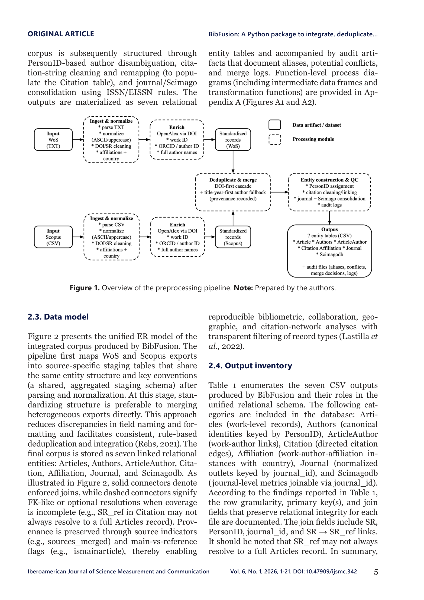

Figure 1
저자: Angelo Britto, Sebastian Robledo, Martha Zuluaga | 날짜: 2026-02-14 | Journal: Iberoamerican Journal of Science Measurement and Communication | DOI: 10.47909/ijsmc.342
Figure 1
Scopus와 Web of Science에서 내보낸 서지 데이터를 어떻게 하나의 신뢰할 수 있는 분석용 코퍼스로 통합할 수 있는가? BibFusion은 DOI 우선 중복 제거, ASCII/대문자 정규화, OpenAlex 기반 식별자 보강, ORCID/OpenAlexAuthorID를 활용한 저자 동명이인 해소를 수행하는 Python 패키지다. 기업 마케팅 쿼리 시연에서 436개 원천 레코드를 253개 고유 주요 저작물로 통합하고, 8,569편의 통합 코퍼스를 생성했다.

Figure 2
계량서지학 분석의 타당성은 기초 서지 메타데이터의 일관성에 달려 있으나, Scopus와 WoS는 커버리지, 내보내기 구조, 메타데이터 완전성이 상이하다. DOI 누락, 저자명 변이, 소속 불일치, 비표준 참고문헌 등이 중복 팽창, 저자 모호성, 인용 링크 단절을 초래하여 생산성·협력·지리 지표에 편향을 유발한다. 기존 도구들(bibliometrix, VOSviewer 등)은 데이터 수집 후 분석에 강하나, 교차 데이터베이스 통합 전처리에는 추가 작업이 필요했다.
총평: Scopus-WoS 통합이라는 실용적 문제에 대한 체계적 해결책을 제시하나, 성능 검증과 기존 도구 대비 우위 입증이 부족하여 도구의 가치 판단이 어렵다.